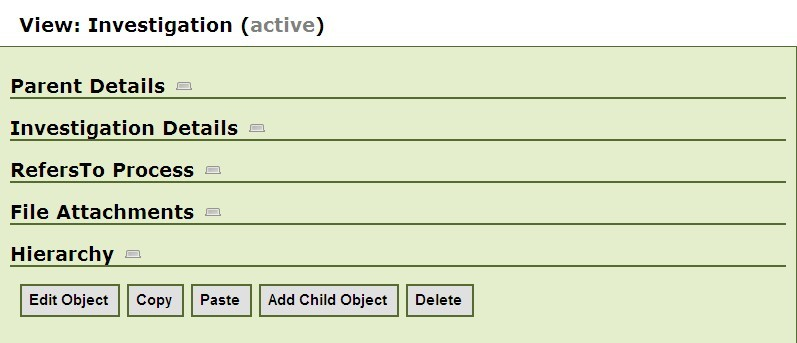

PODD Objects can be cloned via either the Browser Pane or Object View.
Object based copies simply copy a single object to the Clipboard. However the paste can either be shallow; meaning only the object is pasted, or deep; meaning all child objects of the object are pasted as well.
The user selects the browser view of the project to be copied from and expands it to find the objects that the user wants to copy. See figure 16.1.1.
The user clicks on the Copy link next to the object. A message (an alert) will say Object copied to the PODD Clipboard. The user can repeat this action to add more objects (and predicates) to the Clipboard if necessary.
The user then selects the Browser view of the project to be pasted to and clicks on the Paste link next to the object which they wish to paste the object to.
The subsequent actions are as previous section: Cloning Predicates via the Browser Pane.
As per Cloning Objects via the Browser Pane, but users can copy objects to the Clipboard and paste from the Clipboard when they are in the View Object screen.
The option buttons at the bottom of the object view will include Copy and Paste buttons, as per the user's access to the project.

Figure 16.2.1 – Screen shot of an Object View to show the Copy and Paste button
Once the Paste button is clicked, the subsequent actions will be the same as Cloning predicates/objects via the Browser Pane.